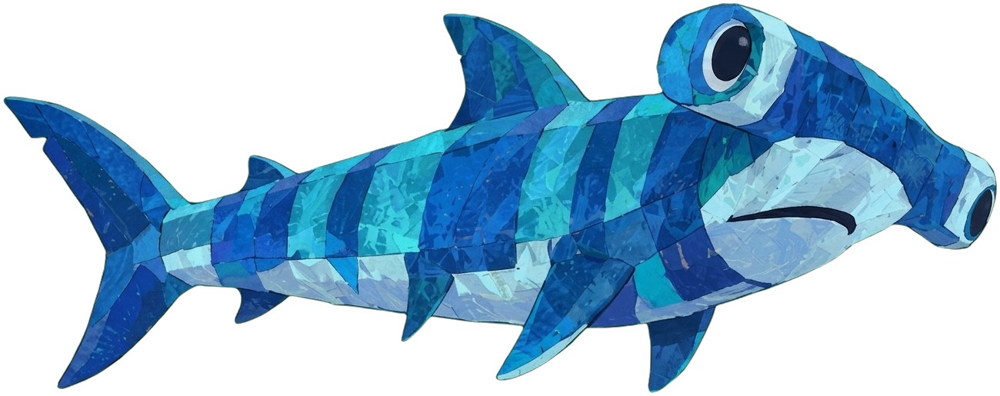

¡A jugar!
Acompaña a Marea en seis capítulos. Toca, arrastra y escucha.
Gira tu celular o usa pantalla completa para jugar mejor.
Videos
Capítulos
Cada capítulo que termines desbloquea el siguiente.
Personajes
Toca una tarjeta para conocerlos.
La música de Marea
 ¡Pronto!
El EP de Marea
¡Pronto!
El EP de Marea
Marea Alta
Tema principal
Toca el disco para escuchar.
Setlist del EP
- 1Marea AltaTema principal1:29
- 2CachudaEl mito del tiburón martilloPronto
- 3Lancha sin lucesLo que pasa de noche en el marPronto
- 4Redes vacíasPara el abuelo EfraínPronto
- 5La voz de todosCanción de la comparsaPronto
El mundo de Marea
Toca cada tarjeta para descubrir.
Marea Alta también es…
1Esta web y su juego¡Estás aquí!
2App «Guardianes de Marea»Próximamente
3El EP de MareaPróximamente